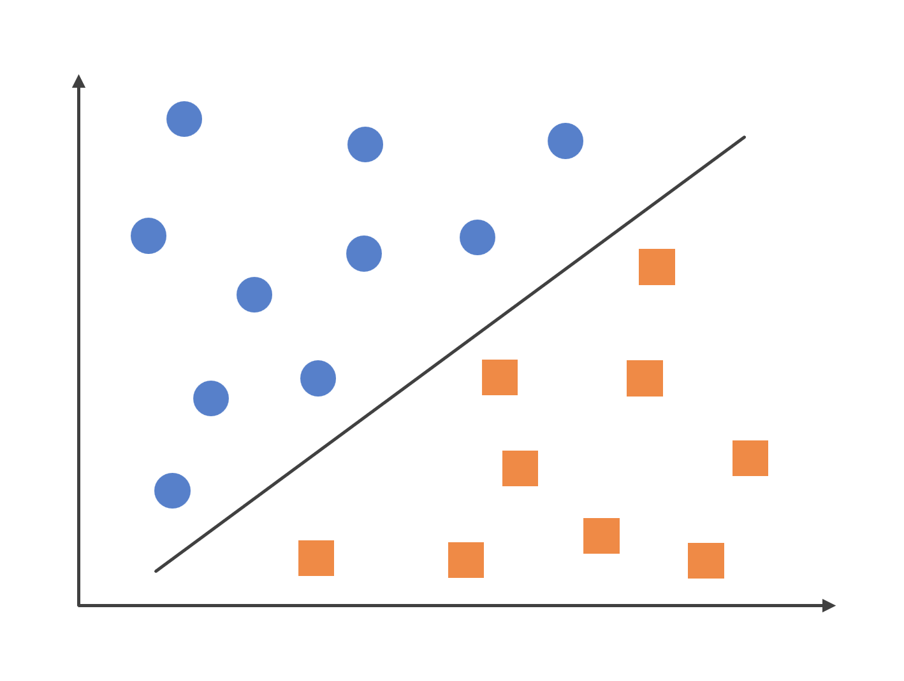

Logistic Regression
| Category | Machine Learning |
|---|---|
| References | References |
| Created | July 07, 2023 |
| Views |
什麼是羅吉斯迴歸？
羅吉斯迴歸（Logistic Regression）是一種監督式學習的演算法，用於解決分類問題，它基於線性迴歸的概念，但通過將輸出通過Sigmoid Function的非線性轉換，將輸出限制在0到1之間。

Sigmoid Function
Sigmoid Function是一種常用的邏輯函數，它將任意實數的輸入轉換到0到1之間的範圍，並且當輸入為正無窮大時，輸出會趨近於1，在輸入為負無窮大時，輸出就趨近於0，在羅吉斯迴歸中，Sigmoid函數被用於將線性迴歸的輸出轉換為機率值，表示預測屬於某一類別的機率，如果輸出大於等於0.5，就將其分類為正類（1），否則分類為負類（0）。
\[ \sigma \left( x \right) = \frac{1}{ 1 + e^{-x} } \]
| 變數名稱 | 變數意義 |
|---|---|
| $x$ | 代表輸入變數 |
| $e$ | 代表自然對數的底數 |
羅吉斯迴歸的優缺點
- 簡單而有效：羅吉斯迴歸是一種線性模型，它易於實現且不需要複雜的計算和設定。
- 機率的可解釋性：羅吉斯迴歸使用Sigmoid Function將輸出限制在0到1之間，可以將輸出解釋為機率，這使得我們能夠評估和解釋預測結果的可靠性。
- 可處理高維度的資料：羅吉斯迴歸在處理高維度的資料集時表現良好，它可以有效地處理大量的特徵，並且不容易受到維度過大的困擾。
優點：
- 線性假設：羅吉斯迴歸是一個線性模型，它假設自變量和因變量之間存在線性關係，所以當資料具有複雜的非線性關係時，羅吉斯迴歸可能會受到限制。
- 易受到共線性影響：如果特徵之間存在高度相關性（共線性），羅吉斯迴歸的估計參數可能不穩定且難以解釋，這可能導致模型的性能下降。
缺點：